L’Università di Padova offre al personale ChatGPT Edu, attualmente a 7 € al mese più IVA: circa 8,6 € effettivi al mese, cioè intorno ai 100 € all’anno, pagabili con fondi di ricerca. Per quello che offre è un’ottima occasione: a un privato una potenza simile costerebbe probabilmente molto di più, forse fino a un piano da 100 € al mese (confronto indicativo, non verificato nel dettaglio, ma plausibile guardando i listini).
Ho l’impressione però che molti colleghi lo usino come una semplice chat per riformulare email, sfruttandone una frazione minima. Questo post non vuole essere una guida completa (sarebbe impossibile, e diventerebbe vecchia in un mese). È un prontuario: le cose da sapere e un paio di raccomandazioni.
Disclaimer. Racconto la mia esperienza con ChatGPT Edu all’Università di Padova, a ottobre 2026. Le condizioni (modelli disponibili, livelli di ragionamento, limiti d’uso, funzioni attive) sono negoziate e configurate dall’ateneo: in altre università possono essere diverse. Anche i nomi dei modelli cambiano di continuo; le schermate servono a orientarsi, non a memorizzare nomi.
1. Chat o Work? Di default, Chat
In alto nella pagina c’è un selettore Chat / Work.
- Chat è la conversazione classica: domande, testi, codice, analisi di file caricati, ricerche.
- Work è la modalità “agente”: in pratica è Codex in cloud. Stessi modelli, stessi livelli di ragionamento e soprattutto stessi limiti d’uso di Codex: quello che consumate in Work non lo avete più per Codex.
Raccomandazione: usate sempre Chat per le richieste ordinarie, anche impegnative. Il credito Work conviene tenerlo per Codex in locale, che per il lavoro su progetti veri è molto più comodo e potente perché lavora direttamente sui vostri file (vedi il punto 7). NON conviene sprecare crediti Work/Codex per lavori anche complessi e ad alto ragionamento che possono concludersi in una Chat (eventualmente con qualche documento caricato in input e qualche documento scaricato come output).
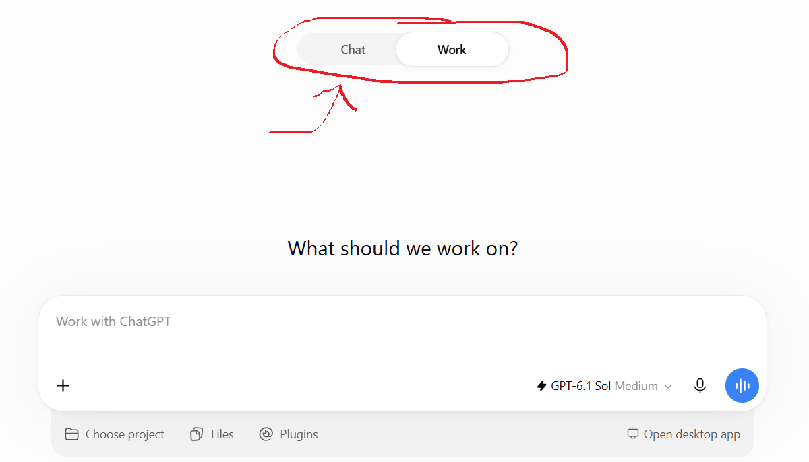
2. Modelli e livelli di ragionamento: la cosa più importante
È la cosa che fa più differenza, ed è quella che quasi nessuno tocca. Accanto alla casella di testo c’è un selettore del livello di ragionamento (thinking effort). In Chat ha quattro posizioni: Instant, Medium, High, Pro.
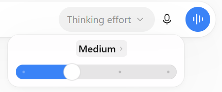
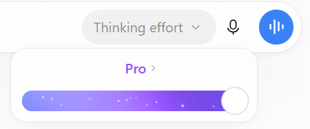
Cliccando sul nome del livello si apre anche la scelta del modello: di solito conviene lasciare il più recente.
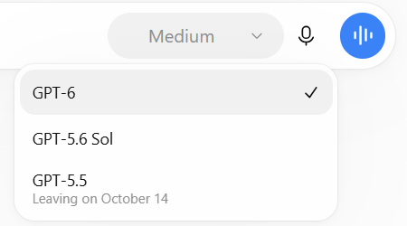
Indicativamente:
| Livello | Quando usarlo |
|---|---|
| Instant | Domande banali, riformulazioni veloci, traduzioni semplici. |
| Medium | Il default: va bene per la maggior parte delle richieste. |
| High | Statistica, codice, revisione critica di un testo o di un articolo, ragionamenti delicati. Nel dubbio, questo. |
| Pro | Problemi davvero difficili o lavori articolati da sviluppare dall’inizio alla fine. Lento e contingentato (vedi sotto). |
In Work valgono gli stessi modelli e gli stessi livelli di ragionamento di Codex, fino a Extra high, Max e Ultra (che consumano i limiti molto in fretta): vedi la guida a Codex.
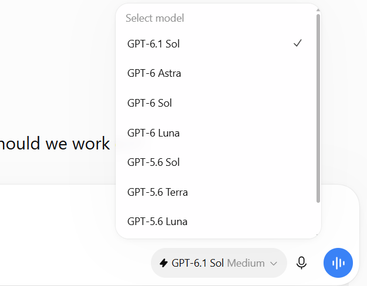
Nota. Nomi dei modelli, livelli disponibili e limiti sono quelli di ottobre 2026 e cambieranno, probabilmente anche in fretta. La logica, verosimilmente, resterà la stessa: un modello più recente e un ragionamento più alto danno risposte migliori, ma sono più lenti e consumano di più.
3. I limiti d’uso: in Chat, tranquilli (tranne con Pro)
Una rassicurazione, che spero incoraggi a osare di più: nella mia esperienza con ChatGPT Edu, la Chat anche con moltissimi prompt ripetuti a ragionamento High non ha mai raggiunto limiti di utilizzo. Usate High senza troppi scrupoli.
Diverso è il caso di Work, che attinge ai limiti di Codex (finestra di 5 ore e settimanale), e soprattutto di Pro: lì i limiti ci sono e si sentono (in un certo periodo erano appena 16 richieste al mese; non so se con Edu sia ancora così). Pro ha senso per sviluppare progetti molto articolati dall’inizio alla fine, ma per quello, francamente, è preferibile Codex.
4. Strumenti: ricerca web e Deep research
Il pulsante + a sinistra della casella apre gli strumenti: caricare file, generare immagini, ricerca web, Deep research e altro.
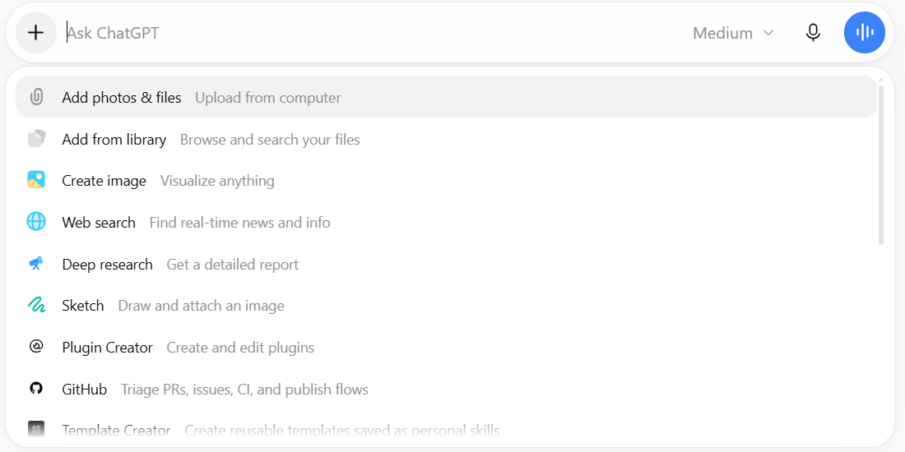
- Web search: risposte basate su fonti aggiornate, con link. Utile per qualsiasi cosa successa di recente o per verificare.
- Deep research: ChatGPT lavora per diversi minuti, consulta decine di fonti e restituisce un report strutturato con citazioni. Va bene per una ricognizione su un tema, un confronto tra strumenti o metodi, una prima mappa della letteratura. Prima di partire di solito pone qualche domanda per chiarire cosa vi serve: rispondete con cura, perché da lì dipende il risultato. Le fonti vanno sempre controllate, soprattutto quelle scientifiche.
5. Connettori: Gmail, Calendar, GitHub, Drive…
Questa è la funzione che più spesso viene ignorata, ed è tra le più utili. Scrivendo @** nella casella di testo compaiono i connettori** (qui chiamati plugin) e le eventuali skill: Gmail, Google Calendar, Google Drive, GitHub, e altri. Una volta collegato un account, ChatGPT può leggere (e, se glielo chiedete, agire) direttamente lì.
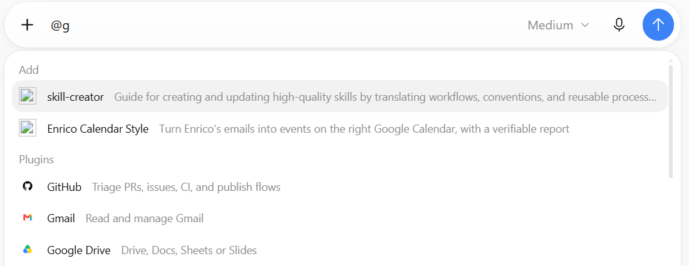
I connettori si installano e si gestiscono dalla pagina Plugins (icona **@** nella barra a sinistra). La scheda Università di Padova raccoglierebbe quelli resi disponibili dall’ateneo; al momento è vuota.
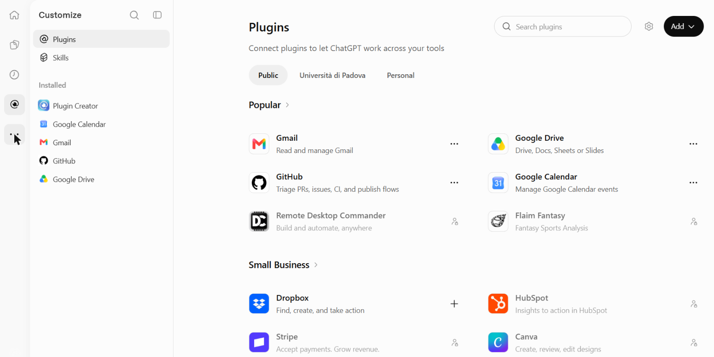
Qualche esempio di richieste:
- @Gmail riassumimi le mail della settimana che richiedono una mia risposta, in ordine di urgenza.
- @Gmail trova le mail sul progetto X degli ultimi tre mesi e ricostruiscimi cosa abbiamo deciso.
- @Google Calendar quando ho due ore libere la prossima settimana per una riunione?
- @GitHub cosa è cambiato nella repository Y nell’ultimo mese?
- @Google Drive cerca il documento con la bozza del progetto e dimmi cosa manca.
Nella pagina iniziale ChatGPT propone anche, da solo, suggerimenti basati sulle mail recenti (tipo “X chiede una tesi: valuta e rispondi”). Due cautele: controllate sempre prima che invii o modifichi qualcosa, e ricordate che quello che legge passa dai server di OpenAI (attenzione ai dati sensibili).
6. Progetti: contesto e fonti che restano
Un progetto (nella barra laterale, Projects → +) raccoglie in un posto le conversazioni su un tema, le fonti (Sources) e le istruzioni valide per tutte le chat del progetto. Molti (me compreso, lo confesso) usano i progetti solo come cartelle per tenere in ordine le chat. Il loro valore vero sta in fonti e istruzioni, che sono le due cose da riempire.
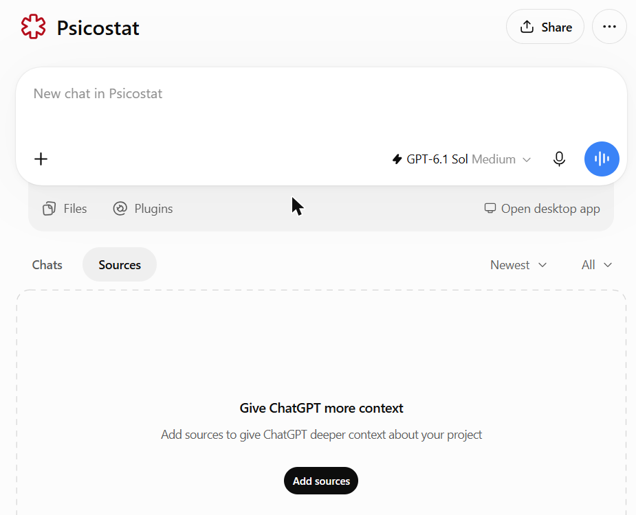
Le fonti si aggiungono con Add sources: file caricati dal computer, file già presenti nel vostro spazio ChatGPT (Space), testo incollato, documenti da Google Drive (Slack è disattivato).
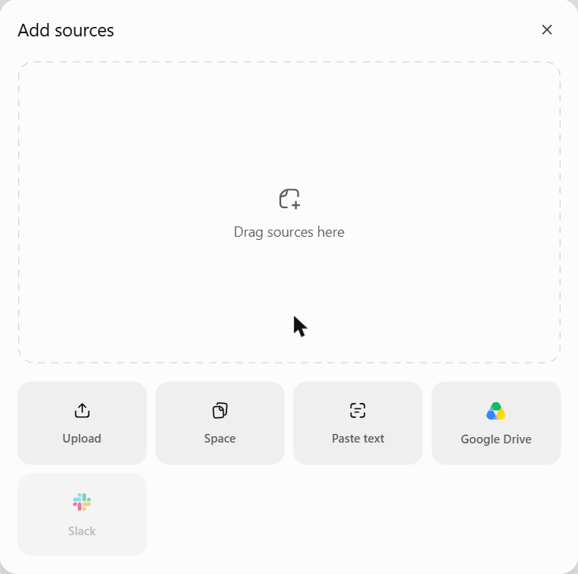
Le istruzioni si scrivono in Project settings (menu ⋯ in alto a destra). Lì si decide anche se il progetto condivide la memoria con le altre chat o ne ha una propria, separata (utile per non “contaminare” un progetto con il resto).
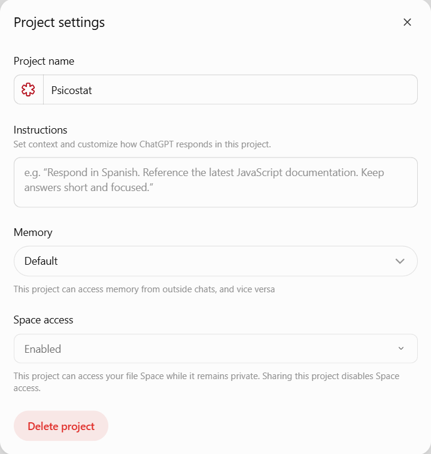
Esempi d’uso: un progetto per la revisione di un articolo (con il manoscritto e le linee guida della rivista come fonti, e nelle istruzioni il tipo di revisione che volete), uno per la gestione degli studenti di tesi (con regolamento e scadenze come fonti, e istruzioni su tono e procedure), uno per un corso (con programma, slide e domande d’esame). Non dovete rispiegare il contesto ogni volta.
Anche qui, però: per cose davvero complesse, con molti file che dipendono l’uno dall’altro (analisi, codice, report, siti), Codex è più adatto.
7. Codex: la bomba atomica
ChatGPT Edu include Codex, l’agente che lavora direttamente sui file del vostro computer: legge una cartella di progetto, scrive ed esegue codice, controlla gli errori, corregge, e vi dice cosa ha fatto. Per sviluppare progetti, analisi, software, siti web, praticamente qualsiasi cosa, è un salto di livello rispetto alla chat. Ed è il motivo principale per cui conviene non sprecare il credito Work.
Ne ho parlato estesamente qui:
- → Agenti AI in locale: cosa cambia rispetto alla chat, con esempi di progetti reali;
- → Guida rapida a Codex: installazione, primo progetto, modelli, ragionamento, limiti, permessi (con un account Edu), da terminale;
- → Guida alle app desktop: lo stesso lavoro dall’app ChatGPT (sezione Codex), senza terminale.
In sintesi
- Chat per tutto l’ordinario; Work e soprattutto Codex per i progetti.
- Alzate il ragionamento: High è quasi sempre una buona scelta, e in Chat i limiti non si raggiungono (nella mia esperienza). Pro solo quando serve davvero.
- Provate Deep research, i connettori con @** e i progetti** (con fonti e istruzioni).
- Tutto quello che viene prodotto va letto e verificato: resta vostra responsabilità.
Per andare oltre: skill, attività pianificate, agenti
Le cose sopra sono quelle fondamentali. Queste sono funzioni ulteriori, meno conosciute, che vale la pena provare una volta presa confidenza.
Skill. Sono file di istruzioni riutilizzabili su come fare certe cose: come scrivo il codice, come imposto un report, come scrivo una email, come inserisco gli impegni nel calendario. Si caricano dalla pagina Skills (icona @** → Skills) e ChatGPT le usa quando servono, oppure le richiamate con @**. Sono le stesse che si usano con Codex e Claude Code: scritte una volta, valgono ovunque.
Per me sono il modo migliore per personalizzare davvero ChatGPT, Codex e gli agenti in generale. Invece di ripetere ogni volta “scrivi il codice R così”, “nei report fai così”, “nelle email usa questo tono”, lo scrivete una volta sola e con cura. Da lì in poi i risultati vi somigliano molto di più. Il formato è uno standard aperto (un file SKILL.md in una cartella), quindi le skill non vi legano a un fornitore. Ne parlo in dettaglio nel post dedicato alle skill. Le mie sono pubbliche qui, e potete usarle come modello per le vostre (c’è anche una skill, skill-creator, che aiuta a scriverle).
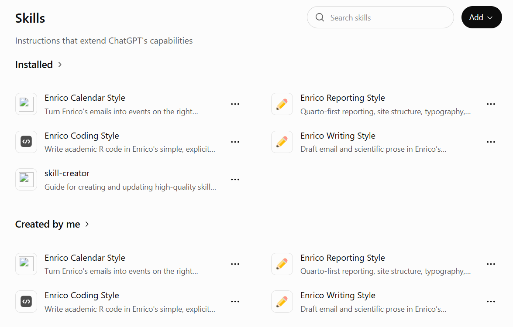
Attività pianificate (Scheduled, l’icona dell’orologio). ChatGPT esegue una richiesta a intervalli regolari e vi avvisa del risultato. Combinate con i connettori sono molto potenti: ogni mattina “@Gmail guarda le mail arrivate da ieri e dimmi cosa richiede una mia risposta o contiene una scadenza”; ogni lunedì “@Google Calendar riassumimi gli impegni della settimana e segnala sovrapposizioni”; ogni mese una ricerca sulle nuove pubblicazioni su un tema.
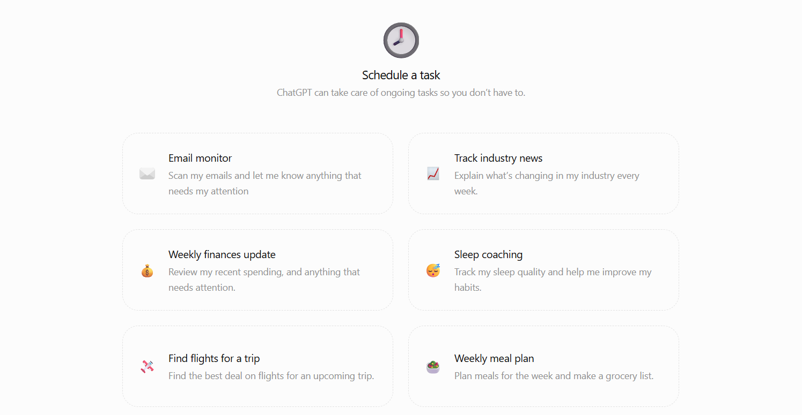
Agenti (menu ⋯ nella barra a sinistra → Agents). Si possono costruire agenti che svolgono un compito ricorrente con istruzioni, fonti e connettori propri, e condividerli con i colleghi nella directory dell’Università di Padova. Ad esempio, un agente che gestisce le richieste degli studenti seguendo regolamento e procedure del corso di studi.
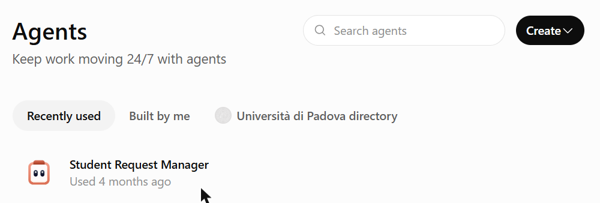